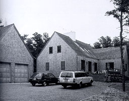
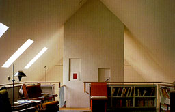
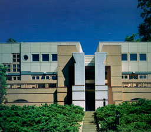
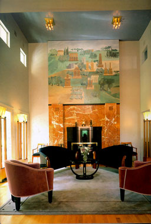
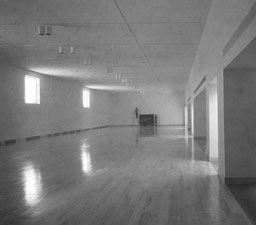

Orleans House, Cape Cod, Massachusetts, 1986
1100 Architect

1100 Architect RVS 97 ARC
Pilar Viladas & Pat Morton |
This house represents the New England vernacular
architecture. It has a very simple form with only a few windows
to protect the house against inclement weather. The house is
free of ornament but the subtle treatment of details gives the
house a strong character. On the photograph on the right the
interior of the livingroom can be seen. The treatment of details
gives the interior the same characteristic look as the outside.
Limited daylight enters the room only from one side and gives
the room a very intimate sphere. |
 |
|
Plocek House, Waren, New Jersey, 1976-1982
Michael GravesGA Houses
A.D.A. EDITA Tokyo |
This house is situated on a steeply sloping
hillside in the wood. Axes through the house make surveyable
circulation possible. The intersection of these axis forms a
central stair column. This column is capped by a skylight so
natural daylight can enter the centre of house on all floors.
The photograph on the right shows the interior of the livingroom.
The two windows near the ceiling show how daylight enters the
room in case of variant E0 in practice. |
 |
American Heritage Center, University of Wyoming, Laramie, 1986-1993
Antoine PredockAntoine Predock; Architect
1994 Rizzoli International Publications, Inc. |
As can be seen on the left photograph the
building has been integrated in the landscape as the form of
a mountain. The mountain is aerodynamically positioned with respect
to violent winds. Openings in the cone are abrupt and limited.
The right photograph shows a piece of the interior. The ceiling
is diffuse while the floor is more reflective. Incoming daylight
makes this clearly visible.
|
 |
|
|
|
|
|
|
|
|
|
|
|
|
|
|
|
|